EVscope Comprehensive Analysis Report
Rambo (Yiyong) Zhao
Xianjun Dong
Himanshu Chintalapudi
23 June, 2025
## [[1]]
## [1] "knitr" "stats" "graphics" "grDevices" "utils" "datasets" "methods" "base"
##
## [[2]]
## [1] "readr" "knitr" "stats" "graphics" "grDevices" "utils" "datasets" "methods" "base"
##
## [[3]]
## [1] "dplyr" "readr" "knitr" "stats" "graphics" "grDevices" "utils" "datasets" "methods" "base"
##
## [[4]]
## [1] "DT" "dplyr" "readr" "knitr" "stats" "graphics" "grDevices" "utils" "datasets" "methods" "base"
##
## [[5]]
## [1] "tools" "DT" "dplyr" "readr" "knitr" "stats" "graphics" "grDevices" "utils" "datasets" "methods" "base"
##
## [[6]]
## [1] "stringr" "tools" "DT" "dplyr" "readr" "knitr" "stats" "graphics" "grDevices" "utils" "datasets" "methods" "base"
##
## [[7]]
## [1] "ggplot2" "stringr" "tools" "DT" "dplyr" "readr" "knitr" "stats" "graphics" "grDevices" "utils" "datasets" "methods" "base"
##
## [[8]]
## [1] "plotly" "ggplot2" "stringr" "tools" "DT" "dplyr" "readr" "knitr" "stats" "graphics" "grDevices" "utils" "datasets" "methods" "base"
##
## [[9]]
## [1] "tidyr" "plotly" "ggplot2" "stringr" "tools" "DT" "dplyr" "readr" "knitr" "stats" "graphics" "grDevices" "utils" "datasets" "methods" "base"EVscope Pipeline
EVscope is a state-of-the-art, open-source bioinformatics pipeline for comprehensive analysis of extracellular vesicle (EV) RNA sequencing data. Designed to address the unique challenges of EV RNA-seq—low RNA abundance, fragmentation, and contamination—it processes paired-end FASTQ files through quality control, UMI-based deduplication, alignment, circular RNA detection, expression quantification, taxonomic classification, rRNA detection, and cellular origin inference. Optimized for the SMARTer Stranded Total RNA-Seq Kit v3 (Pico Input), EVscope introduces a novel genome-wide expectation-maximization (EM) algorithm for multi-mapping read assignment and a unique read-through detection method for Read1 trimming. It supports 20 RNA biotype annotations and integrates tools like FastQC, STAR, CIRCexplorer2, CIRI2, RSEM, and Kraken2, delivering robust results via an HTML report.

Step_01_Raw_QC
FastQC Report for Read 1
FastQC Report for Read 2
Step_02_UMI_Analysis
UMI Motif Logo
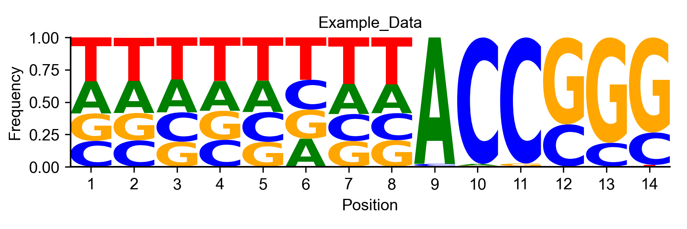
ACC Motif Fraction
UMI Base Distribution
Step_03_UMI_Adaptor_Trim
Read Length Distribution After Trimming

Readthrough UMI Trimming Log
Step_04_Trimmed_QC
Trimmed FastQC Report for Read 1
Trimmed FastQC Report for Read 2
Step_06_Alignment_Initial
STAR Initial Alignment Summary
Step_06_Alignment_Refined
STAR Refined Alignment Summary
Step_07_Strand_Detection
Library Strandedness

Strandedness Details
Step_08_CIRCexplorer2_circRNA
CIRCexplorer2 Expression (CPM)
Step_09_CIRI2_circRNA
CIRI2 Expression (CPM)
Step_10_circRNA_Merge
Overlap of circRNA Detection Tools
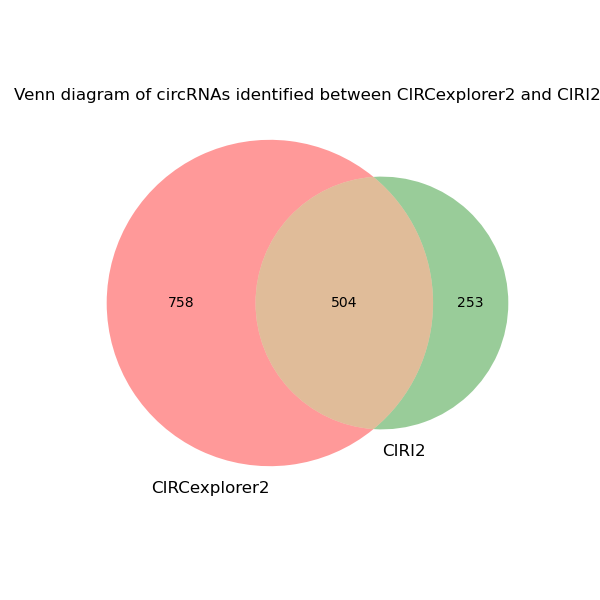
Combined circRNA Matrix
Step_11_RNA_Metrics
Picard Aligned Base Distribution
Insert Size Distribution

Step_15_featureCounts_Expression
Combined Linear and Circular RNA Expression
Expression Analysis Plots
Example_Data_bar_plot_for_top_100_highly_expressed_genes.png

Example_Data_RNA_type_composition_1subplot.png

Example_Data_RNA_type_composition_20subplots.png

Example_Data_RNA_type_composition_2subplots.pdf.png

Step_16_gDNA_Corrected_Expression
Combined Linear and Circular RNA Expression (gDNA Corrected)
gDNA-Corrected Expression Plots
Example_Data_bar_plot_for_top_100_highly_expressed_genes.png

Example_Data_RNA_type_composition_1subplot.png

Example_Data_RNA_type_composition_20subplots.png

Example_Data_RNA_type_composition_2subplots.pdf.png

Step_17_RSEM_Expression
Combined Linear and Circular RNA Expression (RSEM)
RSEM-based Expression Plots
Example_Data_bar_plot_for_top_100_highly_expressed_genes.png
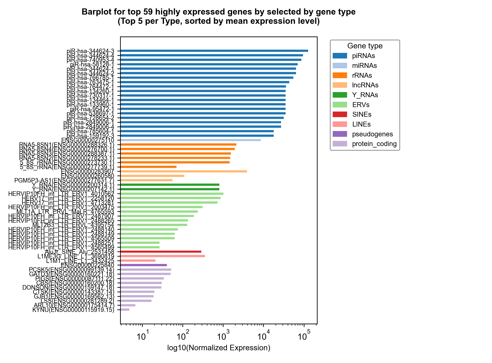
Example_Data_RNA_type_composition_1subplot.png
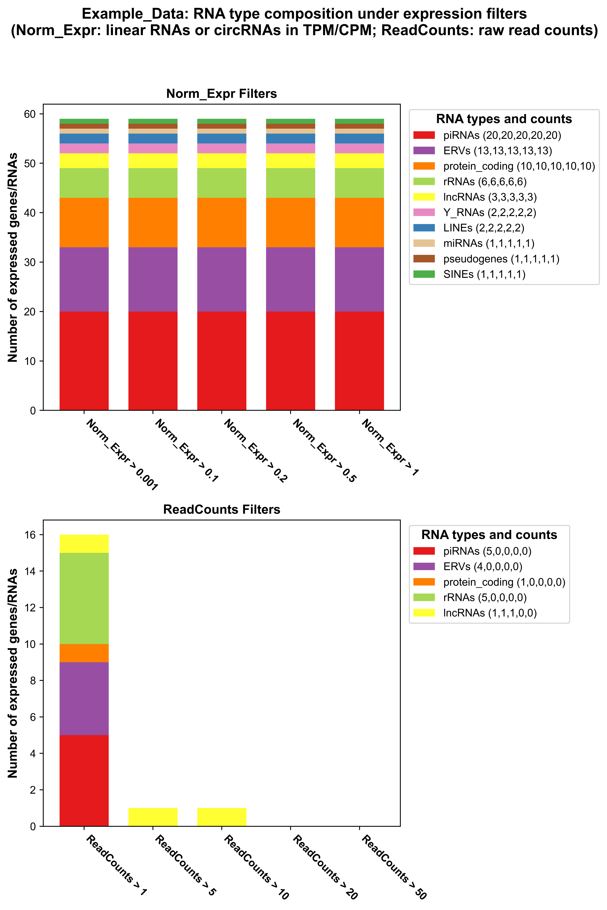
Example_Data_RNA_type_composition_20subplots.png
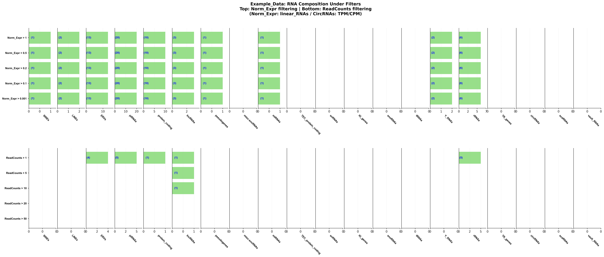
Example_Data_RNA_type_composition_2subplots.pdf.png

Step_18_Genomic_Regions
Read Distribution Across Genomic Regions
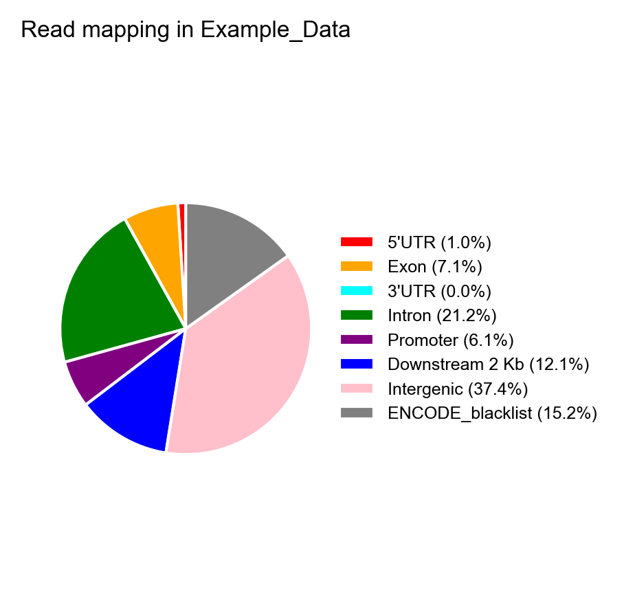
Feature Count Summaries
Step_19_Taxonomy
Krona Interactive Taxonomy Report
Kraken2 Report
Step_20_featureCounts_Deconvolution
Deconvolution Plots
Example_Data_Ensembl_ID_TPM_matrix_featureCounts_GTEx_v10_SMTS_AVG_TPM_deconvolution_fraction_1.46%_overlaped_ensembl_IDs.png
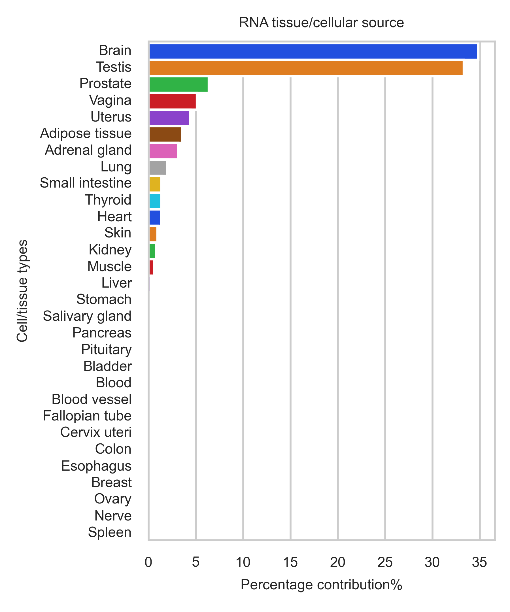
Example_Data_Ensembl_ID_TPM_matrix_featureCounts_GTEx_v10_SMTS_AVG_TPM_deconvolution_fraction_1.46pct_overlaped_ensembl_IDs.png
Example_Data_Ensembl_ID_TPM_matrix_featureCounts_GTEx_v10_SMTSD_AVG_TPM_deconvolution_fraction_1.46%_overlaped_ensembl_IDs.png
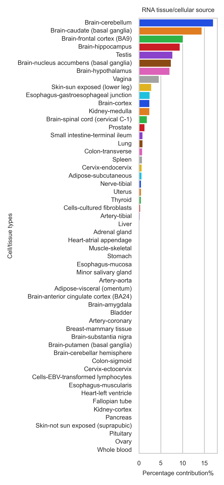
Example_Data_Ensembl_ID_TPM_matrix_featureCounts_GTEx_v10_SMTSD_AVG_TPM_deconvolution_fraction_1.46pct_overlaped_ensembl_IDs.png
Example_Data_Ensembl_ID_TPM_matrix_featureCounts_human_brain_single_cell_atlasV1_31superclusters_AVP_CPM_deconvolution_fraction_2.78%_overlaped_ensembl_IDs.png
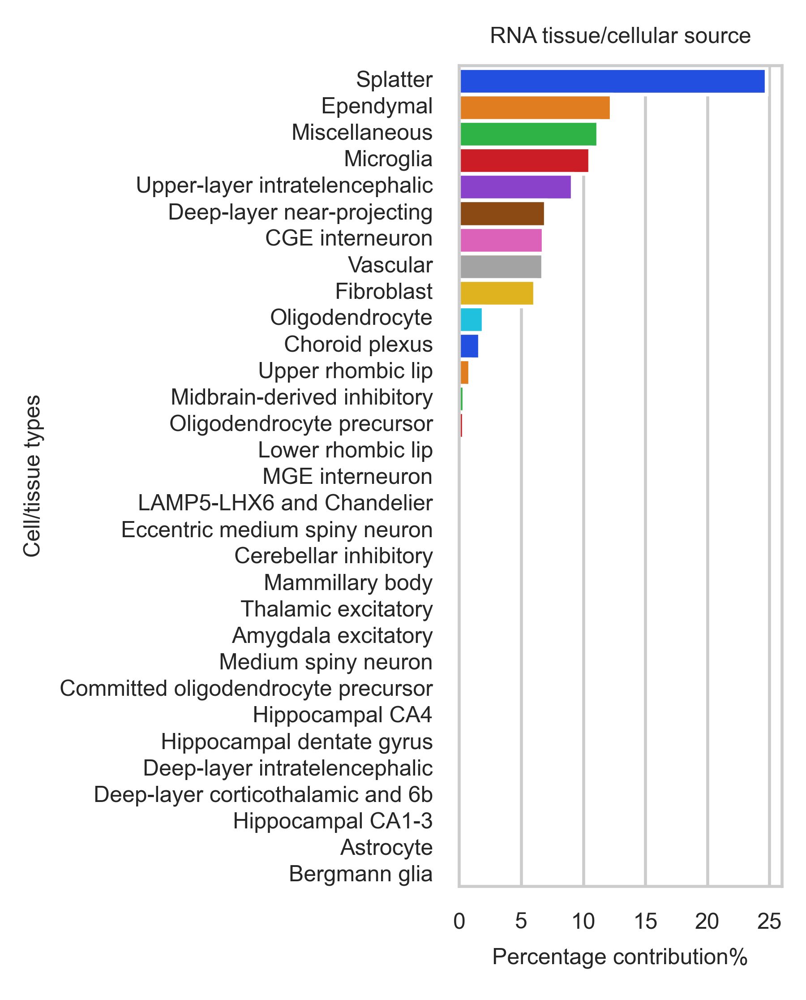
Example_Data_Ensembl_ID_TPM_matrix_featureCounts_human_brain_single_cell_atlasV1_31superclusters_AVP_CPM_deconvolution_fraction_2.78pct_overlaped_ensembl_IDs.png
Step_21_gDNA_Corrected_Deconvolution
Deconvolution Plots
Example_Data_Ensembl_ID_TPM_matrix_featureCounts_gDNA_correction_GTEx_v10_SMTS_AVG_TPM_deconvolution_fraction_1.09%_overlaped_ensembl_IDs.png
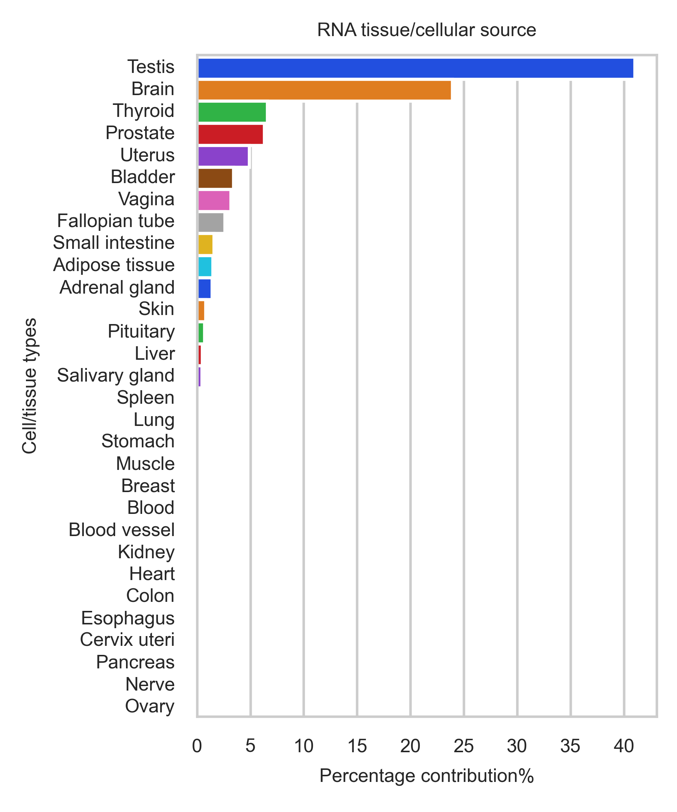
Example_Data_Ensembl_ID_TPM_matrix_featureCounts_gDNA_correction_GTEx_v10_SMTS_AVG_TPM_deconvolution_fraction_1.09pct_overlaped_ensembl_IDs.png
Example_Data_Ensembl_ID_TPM_matrix_featureCounts_gDNA_correction_GTEx_v10_SMTSD_AVG_TPM_deconvolution_fraction_1.09%_overlaped_ensembl_IDs.png

Example_Data_Ensembl_ID_TPM_matrix_featureCounts_gDNA_correction_GTEx_v10_SMTSD_AVG_TPM_deconvolution_fraction_1.09pct_overlaped_ensembl_IDs.png
Example_Data_Ensembl_ID_TPM_matrix_featureCounts_gDNA_correction_human_brain_single_cell_atlasV1_31superclusters_AVP_CPM_deconvolution_fraction_2.02%_overlaped_ensembl_IDs.png
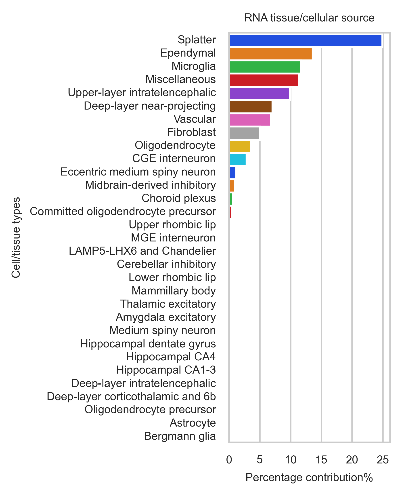
Example_Data_Ensembl_ID_TPM_matrix_featureCounts_gDNA_correction_human_brain_single_cell_atlasV1_31superclusters_AVP_CPM_deconvolution_fraction_2.02pct_overlaped_ensembl_IDs.png
Step_22_RSEM_Deconvolution
Deconvolution Plots
Example_Data_Ensembl_ID_TPM_matrix_RSEM_GTEx_v10_SMTS_AVG_TPM_deconvolution_fraction_0.83%_overlaped_ensembl_IDs.png
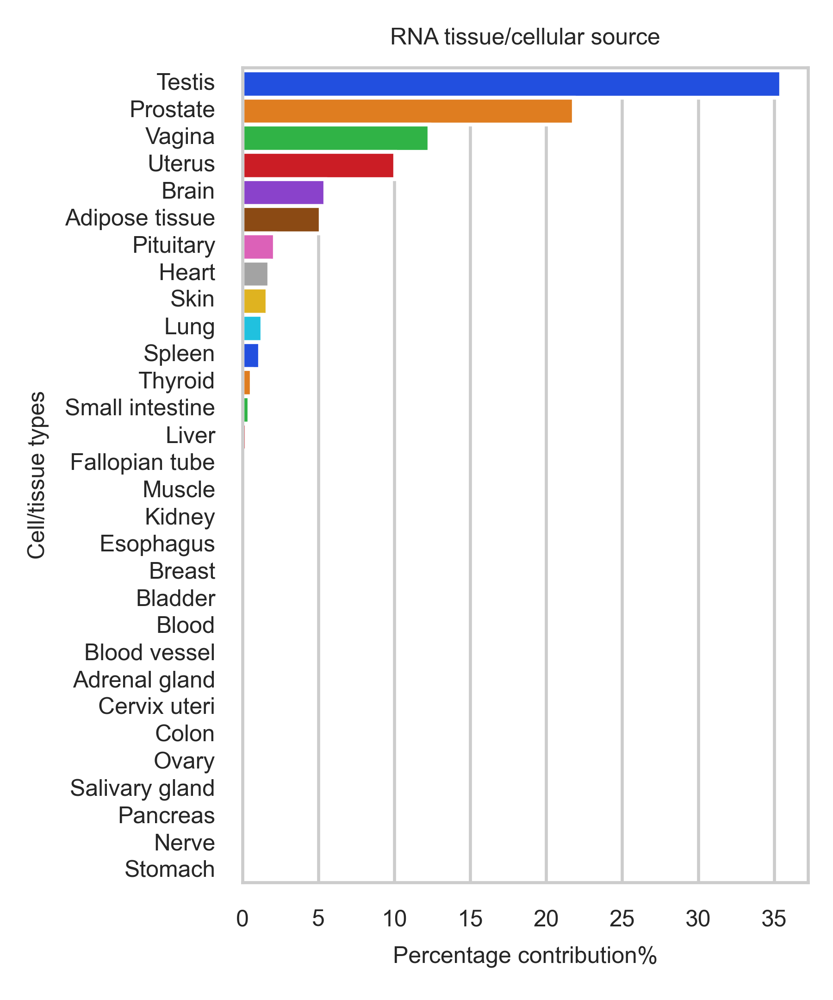
Example_Data_Ensembl_ID_TPM_matrix_RSEM_GTEx_v10_SMTS_AVG_TPM_deconvolution_fraction_0.83pct_overlaped_ensembl_IDs.png
Example_Data_Ensembl_ID_TPM_matrix_RSEM_GTEx_v10_SMTSD_AVG_TPM_deconvolution_fraction_0.83%_overlaped_ensembl_IDs.png
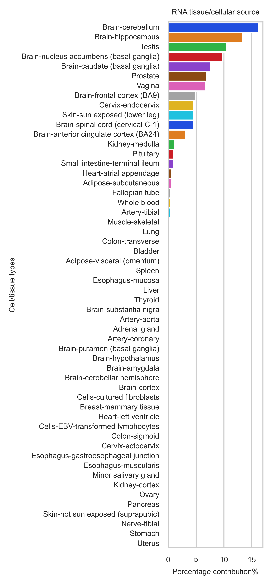
Example_Data_Ensembl_ID_TPM_matrix_RSEM_GTEx_v10_SMTSD_AVG_TPM_deconvolution_fraction_0.83pct_overlaped_ensembl_IDs.png
Example_Data_Ensembl_ID_TPM_matrix_RSEM_human_brain_single_cell_atlasV1_31superclusters_AVP_CPM_deconvolution_fraction_1.62%_overlaped_ensembl_IDs.png
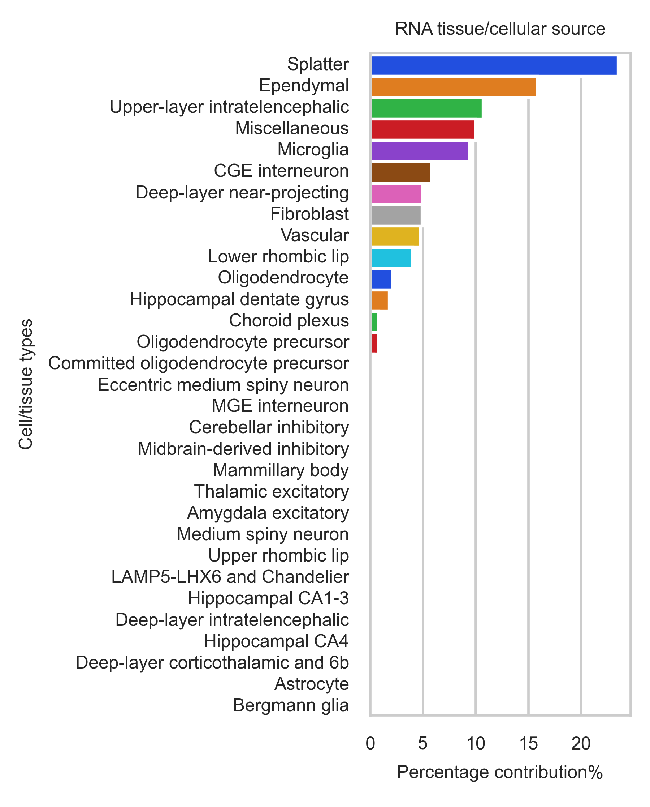
Example_Data_Ensembl_ID_TPM_matrix_RSEM_human_brain_single_cell_atlasV1_31superclusters_AVP_CPM_deconvolution_fraction_1.62pct_overlaped_ensembl_IDs.png
Step_24_QC_Summary
QC Metrics Summary
Step_25_EMapper_BigWig_Quantification
Generated BigWig Files
Generated files are available in
Step_25_EMapper_BigWig_Quantification/EMapper_output/.
Step_26_BigWig_Density_Plot
Coverage Density over RNA Types
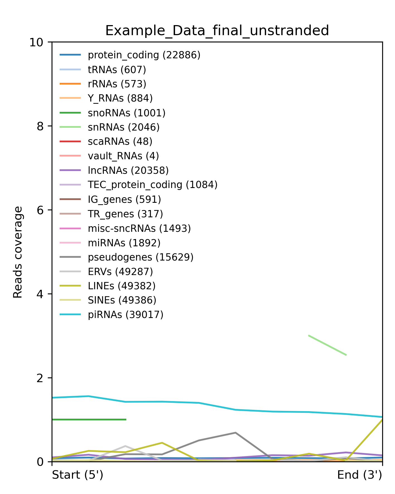
Coverage Density over Meta-Gene Regions
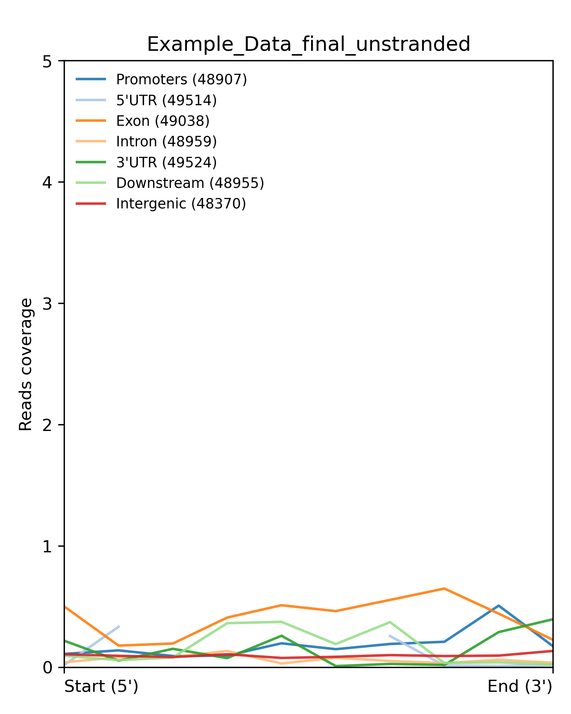
Appendix: Session Information
## R version 4.3.1 (2023-06-16)
## Platform: x86_64-conda-linux-gnu (64-bit)
## Running under: Ubuntu 22.04.4 LTS
##
## Matrix products: default
## BLAS/LAPACK: /mnt/data/projects/donglab/yiyong_2023/soft/Miniforge_3/lib/libopenblasp-r0.3.27.so; LAPACK version 3.12.0
##
## locale:
## [1] LC_CTYPE=en_US.UTF-8 LC_NUMERIC=C LC_TIME=en_US.UTF-8 LC_COLLATE=en_US.UTF-8 LC_MONETARY=en_US.UTF-8 LC_MESSAGES=en_US.UTF-8 LC_PAPER=en_US.UTF-8 LC_NAME=C LC_ADDRESS=C LC_TELEPHONE=C
## [11] LC_MEASUREMENT=en_US.UTF-8 LC_IDENTIFICATION=C
##
## time zone: America/New_York
## tzcode source: system (glibc)
##
## attached base packages:
## [1] tools stats graphics grDevices utils datasets methods base
##
## other attached packages:
## [1] tidyr_1.3.1 plotly_4.11.0 ggplot2_3.5.1 stringr_1.5.1 DT_0.33 dplyr_1.1.4 readr_2.1.5 knitr_1.50
##
## loaded via a namespace (and not attached):
## [1] sass_0.4.9 generics_0.1.3 stringi_1.8.4 hms_1.1.3 digest_0.6.37 magrittr_2.0.3 RColorBrewer_1.1-3 evaluate_1.0.3 grid_4.3.1 fastmap_1.2.0 jsonlite_2.0.0 httr_1.4.7 purrr_1.0.4 crosstalk_1.2.1 viridisLite_0.4.2
## [16] scales_1.3.0 lazyeval_0.2.2 jquerylib_0.1.4 cli_3.6.5 rlang_1.1.6 crayon_1.5.3 bit64_4.6.0-1 munsell_0.5.1 withr_3.0.2 cachem_1.1.0 yaml_2.3.10 parallel_4.3.1 tzdb_0.5.0 colorspace_2.1-1 vctrs_0.6.5
## [31] R6_2.6.1 lifecycle_1.0.4 htmlwidgets_1.6.4 bit_4.6.0 vroom_1.6.5 pkgconfig_2.0.3 pillar_1.10.1 bslib_0.9.0 gtable_0.3.6 glue_1.8.0 data.table_1.17.0 xfun_0.52 tibble_3.2.1 tidyselect_1.2.1 htmltools_0.5.8.1
## [46] rmarkdown_2.29 labeling_0.4.3 compiler_4.3.1